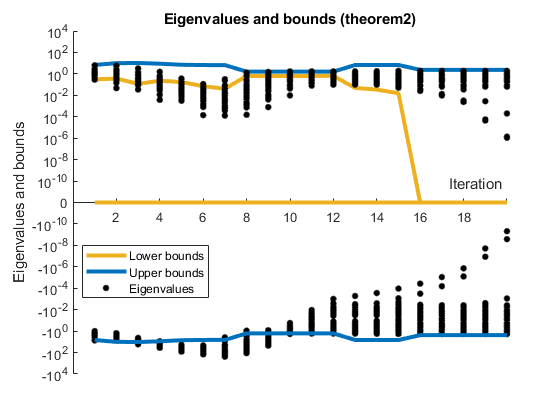
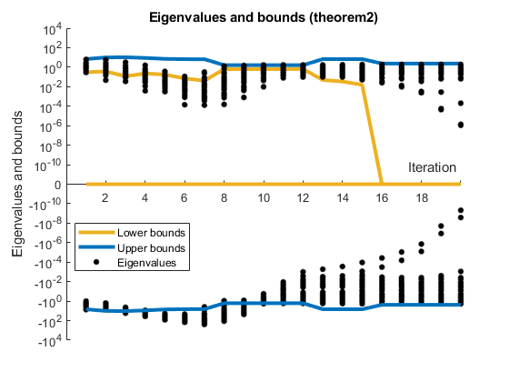

Contents
% %% Clean % clear all % close all % clc
Setup 1
pdcoo_home = pwd; addpath(pdcoo_home); addpath(fullfile(pdcoo_home, 'Formulations')); addpath(fullfile(pdcoo_home, 'Solvers')); addpath(fullfile(pdcoo_home, 'readmps')); addpath(fullfile(pdcoo_home, 'Tools')); addpath(fullfile(pdcoo_home, 'Problems\MPS')); addpath(fullfile(pdcoo_home, 'Validation-eigenvalue')); p = genpath(fullfile(pdcoo_home, 'addons')); addpath(p); p = genpath(fullfile(pdcoo_home, 'Results')); addpath(p); if exist('Variants', 'dir') ~= 7 mkdir('Variants'); end addpath(fullfile(pdcoo_home, 'Variants')); addpath(fullfile(pdcoo_home, 'Test'));
Setup 2
import model.lpmodel; import model.slackmodel; options_pdco.file_id = 1; formulation1 = 'K25'; solver = 'LDL'; classname1 = build_variant(pdcoo_home, formulation1, solver); formulation2 = 'K35'; solver = 'LDL'; classname2 = build_variant(pdcoo_home, formulation2, solver); formulation3 = 'K2'; solver = 'LDL'; classname3 = build_variant(pdcoo_home, formulation3, solver); list_problem ={'afiro.mps'}; n_problem = length(list_problem); options_pdco.d1 = 1.0e-2; options_pdco.d2 = 1.0e-2; options_pdco.OptTol = 1.0e-10; options_solv.atol1 = 1.0e-10; options_solv.atol2 = 1.0e-10; options_solv.itnlim = 100; options_pdco.Print = 1; fprintf(options_pdco.file_id, ... '\n Name Objectif Presid Dresid Cresid PDitns Inner Time D2 * r\n\n'); result = zeros(9,3,n_problem);
variants_dir =
'D:\git_repository\Stage-K2.5\Variants'
variants_dir =
'D:\git_repository\Stage-K2.5\Variants'
variants_dir =
'D:\git_repository\Stage-K2.5\Variants'
Name Objectif Presid Dresid Cresid PDitns Inner Time D2 * r
Check eigenvalues and compare method
n_problem = min(n_problem, 2000); check_eigenvalue = 1 show_one_graphic = 1; % = 1 need check_eigenvalue = 1 show_all_graphic = 0; % = 1 need check_eigenvalue = 1 check_cond = 0; compare_formulations = 0; check_residu = 0; check_all_residu = 0; % = 1 need check_residu = 1 check_limits = 0; check_eigenvalueK35 = 0; check_all_eigenvalueK35 = 0; check_theorem2 = 1; check_all_theorem2 = 0; method_theorem2 = "MaxGap"; options_pdco.d1 = 0; options_pdco.d2 = 0;
check_eigenvalue =
1
Loop
clc for i = 1:n_problem mps_name = list_problem{i}; fprintf('%s\n', mps_name); % Read .mps file mps_name = pwd + "\Problems\MPS\" + mps_name; mps_stru = readmps(mps_name); lp = mpstolp(mps_stru); slack = slackmodel(lp); Anorm = normest(slack.gcon(slack.x0), 1.0e-3); options_pdco.x0 = slack.x0; options_pdco.x0(slack.jLow) = slack.bL(slack.jLow) + 1; options_pdco.x0(slack.jUpp) = slack.bU(slack.jUpp) - 1; options_pdco.x0(slack.jTwo) = (slack.bL(slack.jTwo) + slack.bU(slack.jTwo)) / 2; options_pdco.xsize = max(norm(options_pdco.x0, inf), 1); options_pdco.zsize = max(norm(slack.gobj(slack.x0), inf) + sqrt(slack.n) * Anorm, 1); options_pdco.z0 = options_pdco.zsize * ones(slack.n, 1); options_pdco.y0 = zeros(slack.m, 1); options_pdco.mu0 = options_pdco.zsize; options_pdco.Maxiter = min(max(30, slack.n), 100); options_pdco.check_eigenvalue = check_eigenvalue; options_pdco.check_residu = check_residu; options_pdco.check_cond = check_cond; options_pdco.check_limits = check_limits; options_pdco.check_theorem2 = check_theorem2; options_pdco.check_eigenvalueK35 = check_eigenvalueK35; options_pdco.method = method_theorem2; options_form = struct(); Problem1 = eval([classname1, '(slack, options_pdco,options_form,options_solv)']); Problem1.solve; Problem2 = eval([classname2, '(slack, options_pdco,options_form,options_solv)']); Problem2.solve; Problem3 = eval([classname3, '(slack, options_pdco,options_form,options_solv)']); Problem3.solve; fprintf(Problem1.file_id, ... '\n%12s %11.4e %6.0f %6.0f %6.0f %6d %6d %7.2f s %11.4e\n', ... mps_name, slack.fobj(Problem1.x), ... log10(Problem1.Pinf), log10(Problem1.Dinf), log10(Problem1.Cinf0), ... Problem1.PDitns, Problem1.inner_total, Problem1.time, options_pdco.d2^2 * norm(Problem1.y)); if check_eigenvalue if i == 1 name = list_problem{i}; prob1 = Problem1; prob2 = Problem2; prob3 = Problem3; l = length(Problem1.M); if check_residu residu = Problem1.opt_residu; evolution_mu = Problem1.evolution_mu; end else if length(Problem1.M) > l name = list_problem{i}; prob1 = Problem1; prob2 = Problem2; prob3 = Problem3; l = length(Problem1.M); if check_residu residu = Problem1.opt_residu; evolution_mu = Problem1.evolution_mu; end end end end if show_all_graphic if check_limits show_eigenvalue(Problem1.eigenvalue, Problem1.limit, options_pdco.d1, options_pdco.d2, Problem1.features_limits) else show_eigenvalue(Problem1.eigenvalue, Problem1.limit); end end if check_all_theorem2 show_eigenvalue_theorem2(o.eigenvalue, o.features_theorem2); end if check_all_residu residu = Problem1.opt_residu evolution_mu = Problem1.evolution_mu; show_residu(residu, evolution_mu) end if compare_formulations if i == 1 name = list_problem{i}; prob1 = Problem1; prob2 = Problem2; prob3 = Problem3; l = length(Problem1.M); else if length(Problem1.M) > l name = list_problem{i}; prob1 = Problem1; prob2 = Problem2; prob3 = Problem3; l = length(Problem1.M); end end end if check_cond & check_eigenvalue show_cond(Problem1.cond, Problem1.limit); elseif check_cond & not(check_eigenvalue) show_cond(Problem1.cond); end if check_all_eigenvalueK35 show_eigenvalueK35(Problem2.eigenvalue, options_pdco.d1, options_pdco.d2) end end fclose('all');
afiro.mps
ROWS Section
COLUMNS section
--------------------------------------------------------
pdco.m Version of 23 Nov 2013
Primal-dual barrier method to minimize a convex function
subject to linear constraints Ax + r = b, bl <= x <= bu
Michael Saunders SOL and ICME, Stanford University
Contributors: Byunggyoo Kim (SOL), Chris Maes (ICME)
Santiago Akle (ICME), Matt Zahr (ICME)
--------------------------------------------------------
A is a sparse matrix
m = 27 n = 51 nnz(A) = 102
max |b | = 44 max |x0| = xsize =
max |y0| = 0 max |z0| = zsize =
x0min = 1 featol = d1max =
z0min = 1 opttol = d2max =
mu0 = bigcenter = 1000
Method = LDL
Bounds:
[0, inf] [-inf, 0] Finite bl Finite bu Two bnds Fixed Free
32 13 32 19 0 0 0
[0, bu] [bl, 0] excluding fixed variables
32 13
Itn mu stepx stepz Pinf Dinf Cinf Objective nf center LDL
0 1.3 0.0 0.0 4.0918000e+03 1.0
1 1.8 0.026 0.026 1.3 -0.0 0.5 7.0251119e+03 1 87.6 237 x2
2 1.8 0.106 0.106 1.2 -0.1 1.5 -7.7086601e+02 1 240.8
3 1.7 0.190 0.190 1.1 -0.1 1.4 5.7806848e+03 1 37.3
4 1.6 0.477 0.477 0.8 -0.4 1.6 -4.3055409e+02 1 79.5
5 1.3 0.752 0.752 0.2 -1.0 1.5 1.6644041e+03 1 63.4
6 0.7 0.901 0.901 -0.8 -2.0 0.9 -5.6331199e+01 1 46.1
7 -0.3 0.942 0.942 -2.0 -3.3 0.4 -3.7934930e+01 1 58.4
8 -0.7 1.000 1.000 -13.1 -13.5 -0.4 -2.3862957e+01 1 3.9
9 -1.7 1.000 1.000 -14.8 -14.1 -1.5 -1.9730439e+01 1 3.2
10 -2.9 1.000 1.000 -15.0 -15.1 -2.4 -3.8325563e+01 1 5.5
11 -3.6 0.813 0.813 -14.8 -15.8 -3.0 -1.2350915e+02 1 110.3
12 -4.1 0.479 0.479 -15.3 -16.1 -3.2 -2.2314187e+02 1 181.6
13 -4.3 0.612 0.612 -14.9 -16.5 -3.6 -3.4481206e+02 1 198.1
14 -4.7 0.906 0.906 -14.9 -16.9 -4.2 -4.3606390e+02 1 38.1
15 -5.4 0.803 0.803 -15.5 -16.3 -4.7 -4.5629656e+02 1 76.3
16 -5.8 0.943 0.943 -16.0 -17.0 -5.3 -4.6298548e+02 1 28.2
17 -6.5 1.000 1.000 -16.0 -16.6 -6.4 -4.6446502e+02 1 1.3
18 -8.3 1.000 1.000 -15.7 -16.6 -8.2 -4.6474909e+02 1 1.6Warning: Matrix is close to singular or badly scaled. Results may be inaccurate.
RCOND = 1.035023e-16.
19 -9.9 1.000 1.000 -15.6 -16.9 -9.9 -4.6475304e+02 1 1.2Warning: Matrix is close to singular or badly scaled. Results may be inaccurate.
RCOND = 8.470329e-20.
20-11.0 1.000 1.000 -15.4 -16.6 -11.0 -4.6475313e+02 1 1.2
Converged
max |x| = 1.002 max |y| = 0.025 max |z| = 0.171 scaled
max |x| = 500.000 max |y| = 1.458 max |z| = 10.000 unscaled
PDitns = 20 LDLitns = 0 cputime = 0.7
Distribution of vector x z
[ 100, 1e+03) 11 0
[ 10, 100) 13 1
[ 1, 10) 0 14
[ 0.1, 1) 0 13
[ 0.01, 0.1) 0 1
[ 0.001, 0.01) 0 0
[ 0.0001, 0.001) 0 0
[ 1e-05, 0.0001) 0 0
[ 1e-06, 1e-05) 2 0
[ 0, 1e-06) 25 22Elapsed time is 0.352480 seconds.
--------------------------------------------------------
pdco.m Version of 23 Nov 2013
Primal-dual barrier method to minimize a convex function
subject to linear constraints Ax + r = b, bl <= x <= bu
Michael Saunders SOL and ICME, Stanford University
Contributors: Byunggyoo Kim (SOL), Chris Maes (ICME)
Santiago Akle (ICME), Matt Zahr (ICME)
--------------------------------------------------------
A is a sparse matrix
m = 27 n = 51 nnz(A) = 102
max |b | = 44 max |x0| = xsize =
max |y0| = 0 max |z0| = zsize =
x0min = 1 featol = d1max =
z0min = 1 opttol = d2max =
mu0 = bigcenter = 1000
Method = LDL
Bounds:
[0, inf] [-inf, 0] Finite bl Finite bu Two bnds Fixed Free
32 13 32 19 0 0 0
[0, bu] [bl, 0] excluding fixed variables
32 13
Itn mu stepx stepz Pinf Dinf Cinf Objective nf center LDL
0 1.3 0.0 0.0 4.0918000e+03 1.0
1 1.8 0.026 0.026 1.3 -0.0 0.5 7.0251119e+03 1 87.6 339 x2
2 1.8 0.106 0.106 1.2 -0.1 1.5 -7.7086601e+02 1 240.8
3 1.7 0.190 0.190 1.1 -0.1 1.4 5.7806848e+03 1 37.3
4 1.6 0.477 0.477 0.8 -0.4 1.6 -4.3055409e+02 1 79.5
5 1.3 0.752 0.752 0.2 -1.0 1.5 1.6644041e+03 1 63.4
6 0.7 0.901 0.901 -0.8 -2.0 0.9 -5.6331199e+01 1 46.1
7 -0.3 0.942 0.942 -2.0 -3.3 0.4 -3.7934930e+01 1 58.4
8 -0.7 1.000 1.000 -13.4 -13.4 -0.4 -2.3862957e+01 1 3.9
9 -1.7 1.000 1.000 -14.9 -14.2 -1.5 -1.9730439e+01 1 3.2
10 -2.9 1.000 1.000 -14.6 -15.3 -2.4 -3.8325563e+01 1 5.5
11 -3.6 0.813 0.813 -15.4 -16.0 -3.0 -1.2350915e+02 1 110.3
12 -4.1 0.479 0.479 -15.4 -16.2 -3.2 -2.2314187e+02 1 181.6
13 -4.3 0.612 0.612 -14.9 -16.6 -3.6 -3.4481206e+02 1 198.1
14 -4.7 0.906 0.906 -15.7 -17.2 -4.2 -4.3606390e+02 1 38.1
15 -5.4 0.803 0.803 -15.2 -16.6 -4.7 -4.5629656e+02 1 76.3
16 -5.8 0.943 0.943 -15.1 -17.2 -5.3 -4.6298548e+02 1 28.2
17 -6.5 1.000 1.000 -15.2 -16.6 -6.4 -4.6446502e+02 1 1.3
18 -8.3 1.000 1.000 -15.0 -17.2 -8.2 -4.6474909e+02 1 1.6Warning: Matrix is close to singular or badly scaled. Results may be inaccurate.
RCOND = 2.142347e-16.
19 -9.9 1.000 1.000 -15.4 -17.0 -9.9 -4.6475304e+02 1 1.2Warning: Matrix is close to singular or badly scaled. Results may be inaccurate.
RCOND = 1.378576e-19.
20-11.0 1.000 1.000 -15.3 -17.2 -11.0 -4.6475313e+02 1 1.2
Converged
max |x| = 1.002 max |y| = 0.025 max |z| = 0.171 scaled
max |x| = 500.000 max |y| = 1.458 max |z| = 10.000 unscaled
PDitns = 20 LDLitns = 0 cputime = 0.1
Distribution of vector x z
[ 100, 1e+03) 11 0
[ 10, 100) 13 1
[ 1, 10) 0 14
[ 0.1, 1) 0 13
[ 0.01, 0.1) 0 1
[ 0.001, 0.01) 0 0
[ 0.0001, 0.001) 0 0
[ 1e-05, 0.0001) 0 0
[ 1e-06, 1e-05) 2 0
[ 0, 1e-06) 25 22Elapsed time is 0.144180 seconds.
--------------------------------------------------------
pdco.m Version of 23 Nov 2013
Primal-dual barrier method to minimize a convex function
subject to linear constraints Ax + r = b, bl <= x <= bu
Michael Saunders SOL and ICME, Stanford University
Contributors: Byunggyoo Kim (SOL), Chris Maes (ICME)
Santiago Akle (ICME), Matt Zahr (ICME)
--------------------------------------------------------
A is a sparse matrix
m = 27 n = 51 nnz(A) = 102
max |b | = 44 max |x0| = xsize =
max |y0| = 0 max |z0| = zsize =
x0min = 1 featol = d1max =
z0min = 1 opttol = d2max =
mu0 = bigcenter = 1000
Method = LDL
Bounds:
[0, inf] [-inf, 0] Finite bl Finite bu Two bnds Fixed Free
32 13 32 19 0 0 0
[0, bu] [bl, 0] excluding fixed variables
32 13
Itn mu stepx stepz Pinf Dinf Cinf Objective nf center LDL
0 1.3 0.0 0.0 4.0918000e+03 1.0
1 1.8 0.026 0.026 1.3 -0.0 0.5 7.0251119e+03 1 87.6 237 x2
2 1.8 0.106 0.106 1.2 -0.1 1.5 -7.7086601e+02 1 240.8
3 1.7 0.190 0.190 1.1 -0.1 1.4 5.7806848e+03 1 37.3
4 1.6 0.477 0.477 0.8 -0.4 1.6 -4.3055409e+02 1 79.5
5 1.3 0.752 0.752 0.2 -1.0 1.5 1.6644041e+03 1 63.4
6 0.7 0.901 0.901 -0.8 -2.0 0.9 -5.6331199e+01 1 46.1
7 -0.3 0.942 0.942 -2.0 -3.3 0.4 -3.7934930e+01 1 58.4
8 -0.7 1.000 1.000 -13.9 -13.5 -0.4 -2.3862957e+01 1 3.9
9 -1.7 1.000 1.000 -15.4 -14.2 -1.5 -1.9730439e+01 1 3.2
10 -2.9 1.000 1.000 -14.7 -15.4 -2.4 -3.8325563e+01 1 5.5
11 -3.6 0.813 0.813 -14.7 -16.1 -3.0 -1.2350915e+02 1 110.3
12 -4.1 0.479 0.479 -15.0 -16.3 -3.2 -2.2314187e+02 1 181.6
13 -4.3 0.612 0.612 -14.8 -16.6 -3.6 -3.4481206e+02 1 198.1
14 -4.7 0.906 0.906 -15.7 -16.7 -4.2 -4.3606390e+02 1 38.1
15 -5.4 0.803 0.803 -15.5 -17.0 -4.7 -4.5629656e+02 1 76.3
16 -5.8 0.943 0.943 -15.3 -16.3 -5.3 -4.6298548e+02 1 28.2
17 -6.5 1.000 1.000 -15.5 -16.6 -6.4 -4.6446502e+02 1 1.3
18 -8.3 1.000 1.000 -15.5 -16.6 -8.2 -4.6474909e+02 1 1.6Warning: Matrix is close to singular or badly scaled. Results may be inaccurate.
RCOND = 1.033358e-16.
19 -9.9 1.000 1.000 -15.6 -16.9 -9.9 -4.6475304e+02 1 1.2Warning: Matrix is close to singular or badly scaled. Results may be inaccurate.
RCOND = 3.049319e-20.
20-11.0 1.000 1.000 -15.4 -16.9 -11.0 -4.6475313e+02 1 1.2
Converged
max |x| = 1.002 max |y| = 0.025 max |z| = 0.171 scaled
max |x| = 500.000 max |y| = 1.458 max |z| = 10.000 unscaled
PDitns = 20 LDLitns = 0 cputime = 0.2
Distribution of vector x z
[ 100, 1e+03) 11 0
[ 10, 100) 13 1
[ 1, 10) 0 14
[ 0.1, 1) 0 13
[ 0.01, 0.1) 0 1
[ 0.001, 0.01) 0 0
[ 0.0001, 0.001) 0 0
[ 1e-05, 0.0001) 0 0
[ 1e-06, 1e-05) 2 0
[ 0, 1e-06) 25 22Elapsed time is 0.150407 seconds.
D:\git_repository\Stage-K2.5\Problems\MPS\afiro.mps -4.6475e+02 -15 -17 -11 20 0 0.69 s 0.0000e+00
Print result
clc print_result(result, list_problem)
if show_one_graphic if check_limits show_eigenvalue(prob1.eigenvalue, prob1.limit, options_pdco.d1, options_pdco.d2, prob1.features_limits) else show_eigenvalue(prob1.eigenvalue, prob1.limit); end end if check_residu show_residu(residu,evolution_mu); end if compare_formulations print_comparison(prob1, prob2, prob3); end if check_theorem2 & not(check_all_theorem2) show_eigenvalue_theorem2(prob1.eigenvalue, prob1.features_theorem2); end if check_eigenvalueK35 & not(check_eigenvalueK35) show_eigenvalueK35(prob2.eigenvalue, options_pdco.d1, options_pdco.d2) end
 
